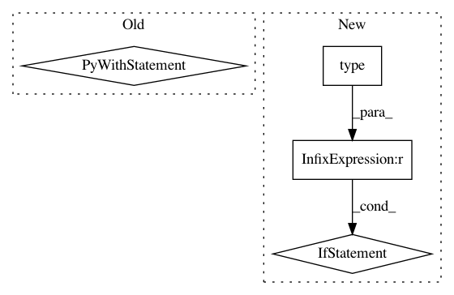

c228fc1c648602f93c078298f9e363f6e02694d2,parlai/core/metrics.py,Metrics,update,#Metrics#Any#Any#,189
Before Change
if "metrics" in observation:
for k, v in observation["metrics"].items():
if k not in ["correct", "f1", "hits@k"]:
with self._lock():
if k not in self.metrics:
self.custom_keys.append(k)
self.metrics[k] = v
else:
self.metrics[k] += v
// Return a dict containing the metrics for this specific example.
// Metrics across all data is stored internally in the class, and
// can be accessed with the report method.
loss = {}
loss["correct"] = correct
return loss
After Change
if "metrics" in observation:
for k, v in observation["metrics"].items():
if k not in ["correct", "f1", "hits@k"]:
if type(self.metrics) is SharedTable:
// can"t share custom metrics during hogwild
pass
else:
if k not in self.metrics:
self.custom_keys.append(k)
self.metrics[k] = v
else:
self.metrics[k] += v
// Return a dict containing the metrics for this specific example.
// Metrics across all data is stored internally in the class, and
// can be accessed with the report method.
loss = {}
loss["correct"] = correct
return loss
In pattern: SUPERPATTERN
Frequency: 3
Non-data size: 4
Instances
Project Name: facebookresearch/ParlAI
Commit Name: c228fc1c648602f93c078298f9e363f6e02694d2
Time: 2017-12-15
Author: ahm@fb.com
File Name: parlai/core/metrics.py
Class Name: Metrics
Method Name: update
Project Name: craffel/mir_eval
Commit Name: c8867b6e46695ea5f7bd9ecfed44b35d42df38c4
Time: 2014-10-28
Author: craffel@gmail.com
File Name: mir_eval/io.py
Class Name:
Method Name: load_patterns
Project Name: craffel/mir_eval
Commit Name: 3e34690bca279c672505a58212746c8053595412
Time: 2014-10-28
Author: craffel@gmail.com
File Name: mir_eval/io.py
Class Name:
Method Name: load_delimited